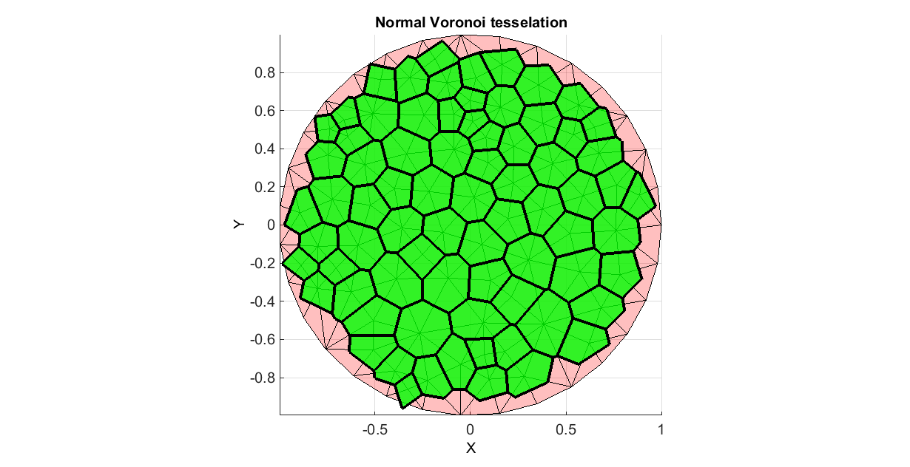
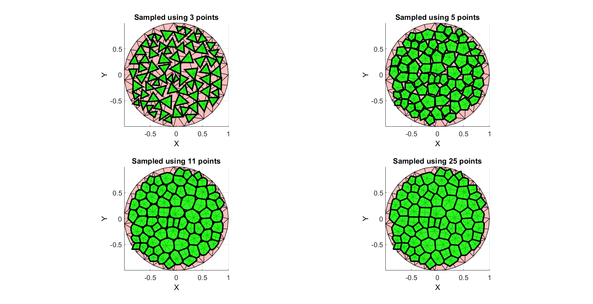

voronoiDiagramEven2D
Below is a basic demonstration of the features of the voronoiDiagramEven2D function.
Contents
clear all; close all; clc; % PLOT SETTINGS figColor='w'; figColorDef='white'; markerSize=15; lineWidth=2; fontSize=15; fAlpha1=0.25; fAlpha2=0.8; lineWidth1=1; lineWidth2=3;
EXAMPLE DELAUNAY TRIANGULATION
%Boundary and mesh parameters ns=50; %Number of points on outer boundary (defines how well the circle is sampled) rOut=1; %Outer radius of circular boundary pointSpacing=rOut/5; %Approximate initial point spacing for point seeding stdP=pointSpacing/2*ones(1,2); %Standard deviations for random point offset after point seeding %Creating boundary curve tt=linspace(0,2*pi,ns); tt=tt(1:end-1); r=rOut.*ones(size(tt)); [x,y] = pol2cart(tt,r); Vb=[x(:) y(:)]; %Create Delaunay derived mesh regionCell={Vb}; [Ft,Vt,~,DT]=regionTriMeshRand2D(regionCell,pointSpacing,stdP,1,0);
COMPUTE NORMAL VORONOI TESSELATION REQUIRING LOOP FOR PLOTTING
[Vv,Fv_cell] =voronoiDiagram(DT); Vv(isinf(Vv))=NaN; hf1=figuremax(figColor,figColorDef); title('Normal Voronoi tesselation','FontSize',fontSize); xlabel('X','FontSize',fontSize);ylabel('Y','FontSize',fontSize);zlabel('Z','FontSize',fontSize); hold on; patch('faces',Ft,'vertices',Vt,'FaceColor','r','FaceAlpha',fAlpha1,'LineWidth',lineWidth1); for q=1:1:numel(Fv_cell) fv=Fv_cell{q}; vv=Vv(fv,:); if all(~isnan(vv)) patch('faces',fv,'vertices',Vv,'FaceColor','g','faceAlpha',fAlpha2,'LineWidth',lineWidth2); end end axis equal; view(2); axis tight; set(gca,'FontSize',fontSize); grid on; drawnow;
%Sample all cells with same amount of points
numPointsVoronoi1=3;
numPointsVoronoi2=5;
numPointsVoronoi3=11;
numPointsVoronoi4=25;
[Vv1,Fv1]=voronoiDiagramEven2D(DT,numPointsVoronoi1);
[Vv2,Fv2]=voronoiDiagramEven2D(DT,numPointsVoronoi2);
[Vv3,Fv3]=voronoiDiagramEven2D(DT,numPointsVoronoi3);
[Vv4,Fv4]=voronoiDiagramEven2D(DT,numPointsVoronoi4);
hf1=figuremax(figColor,figColorDef); subplot(2,2,1); title(['Sampled using ',num2str(numPointsVoronoi1),' points'],'FontSize',fontSize); xlabel('X','FontSize',fontSize);ylabel('Y','FontSize',fontSize); hold on; patch('faces',Ft,'vertices',Vt,'FaceColor','r','FaceAlpha',fAlpha1,'LineWidth',lineWidth1); patch('faces',Fv1,'vertices',Vv1,'FaceColor','g','FaceAlpha',fAlpha2,'LineWidth',lineWidth2); axis equal; view(2); axis tight; set(gca,'FontSize',fontSize); grid on; subplot(2,2,2); title(['Sampled using ',num2str(numPointsVoronoi2),' points'],'FontSize',fontSize); xlabel('X','FontSize',fontSize);ylabel('Y','FontSize',fontSize); hold on; patch('faces',Ft,'vertices',Vt,'FaceColor','r','FaceAlpha',fAlpha1,'LineWidth',lineWidth1); patch('faces',Fv2,'vertices',Vv2,'FaceColor','g','FaceAlpha',fAlpha2,'LineWidth',lineWidth2); axis equal; view(2); axis tight; set(gca,'FontSize',fontSize); grid on; subplot(2,2,3); title(['Sampled using ',num2str(numPointsVoronoi3),' points'],'FontSize',fontSize); xlabel('X','FontSize',fontSize);ylabel('Y','FontSize',fontSize); hold on; patch('faces',Ft,'vertices',Vt,'FaceColor','r','FaceAlpha',fAlpha1,'LineWidth',lineWidth1); patch('faces',Fv3,'vertices',Vv3,'FaceColor','g','FaceAlpha',fAlpha2,'LineWidth',lineWidth2); axis equal; view(2); axis tight; set(gca,'FontSize',fontSize); grid on; subplot(2,2,4); title(['Sampled using ',num2str(numPointsVoronoi4),' points'],'FontSize',fontSize); xlabel('X','FontSize',fontSize);ylabel('Y','FontSize',fontSize); hold on; patch('faces',Ft,'vertices',Vt,'FaceColor','r','FaceAlpha',fAlpha1,'LineWidth',lineWidth1); patch('faces',Fv4,'vertices',Vv4,'FaceColor','g','FaceAlpha',fAlpha2,'LineWidth',lineWidth2); axis equal; view(2); axis tight; set(gca,'FontSize',fontSize); grid on; drawnow;

GIBBON
Kevin M. Moerman (kevinmoerman@hotmail.com)